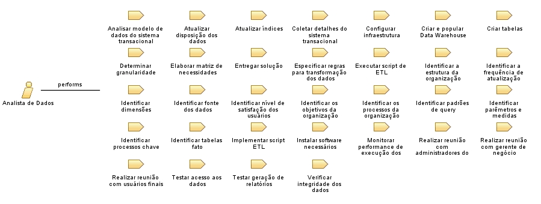

Role: Analista de Dados
É responsável por projetar o Data Warehouse
Relationships

Primary Performs
Analisar modelo de dados do sistema
Atualizar disposição dos dados
Atualizar índices
Coletar detalhes do sistema operacional
Configurar infraestrutura
Criar e popular Data Warehouse
Criar tabelas
Determinar granularidade
Elaborar matriz de necessidades
Entregar solução
Especificar regras para transformação dos dados
Executar script de ETL
Identificar a estrutura da organização
Identificar a frequência de atualização necessária
Identificar dimensões
Identificar fonte dos dados
Identificar nível de satisfação dos usuários
Identificar os objetivos da organização
Identificar os processos da organização
Identificar padrões de query
Identificar parêmetros e medidas
Identificar processos chave
Identificar tabelas fato
Implementar script ETL
Instalar software necessários
Monitorar performance de execução dos índices
Realizar reunião com administradores do sistema operacional
Realizar reunião com gerente de negócio
Realizar reunião com usuários finais
Testar geração de relatórios
Modifies
Atas de Reunião
Dados carregados
Data Warehouse entregue
Matriz de necessidades
Modelo de Dados alterado
Modelo de Fonte de Dados
Modelo Dimensional
Script ETL